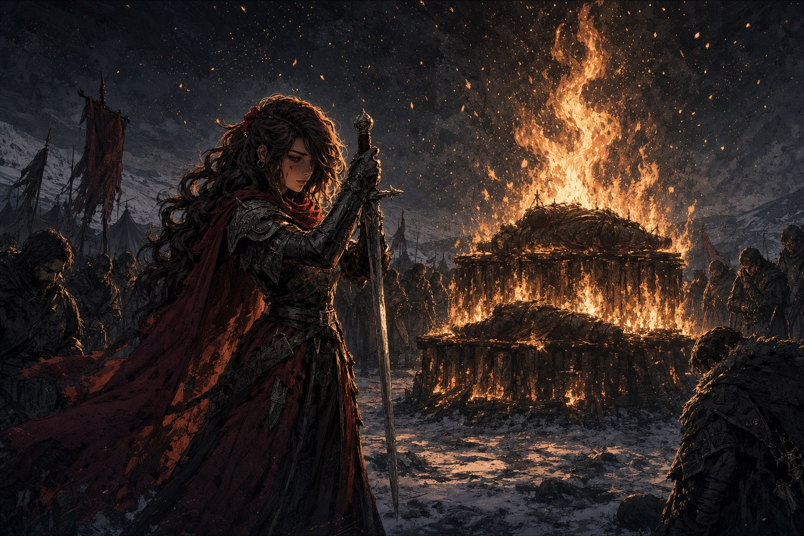
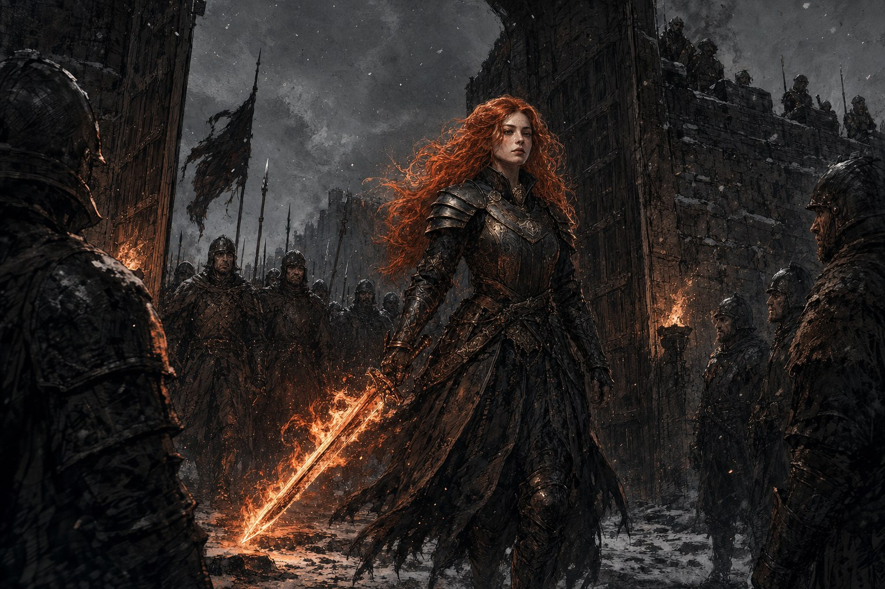

동쪽 호반을 빠져나온 군단은 북쪽으로 방향을 잡았다. 칼리스코 요새를 감싼 숲으로 들기 전, 척후병들이 찾아낸 안전한 자리에서 마지막으로 평원의 밤을 보내기로 했다. 북쪽 하늘에는 요새 쪽에서 피어오르는 희미한 연기가 걸려 있었고, 남서쪽 서쪽 호반과 남동쪽 파냐의 방향에서도 검은 기운이 번졌다. 파냐가 있던 자리는 이미 온통 잿빛이었다. 차가운 밤공기 속에서 병사들은 행군의 피로와 전투의 상처, 그리고 무엇보다 피어를 잃은 슬픔을 안은 채 야영지 한켠으로 모여들었다. 그곳에는 장작이 두 단으로 쌓여 있었다.
장작 두 단
첫째 단에는 그동안 유해를 수습하고도 미처 장례를 치르지 못한 군단병들이 뉘어 있었고, 시신조차 거두지 못한 이들의 자리에는 그들이 아끼던 물건이 대신 놓였다. 그 위 둘째 단에는 편안한 미소를 띤 피어의 유해가 있었다. 아카라 피어스로 돌아가 눈을 감은 사람다운 얼굴이었다. 사령관이 굳으면서도 슬픔이 밴 목소리로 장례의 시작을 알리자, 라하자르가 장작 앞에 무릎을 꿇고 아스리카에게 영혼의 안식을 기원했다. 병사 몇이 횃불을 들고 나와 장작에 불을 붙였고, 작은 불씨가 이내 밝은 불길로 번져 밤하늘로 치솟으며 군단병들과 사도의 유해를 감싸안았다.
불길이 타오르는 동안 병사들이 한 사람씩 앞으로 나와 떠난 이들을 추억했다. 한때 피어의 처사를 이해하지 못해 분노했던 헤이즈가 먼저 나섰다. “피어. 당신에게도 다 사정이 있었겠지요. 어리광 부려 미안합니다.” 오로라는 며칠 전 지하 복도에서 스러진 세네하를 부르다 한참을 말을 잇지 못했다. “세네하. 넌 책을 읽고, 글씨를 쓰는 걸 좋아했었지. 나눠주었던 박하차는 잘 마실게.” 베일리는 입술을 떨며 사도님, 하고 짧은 기도만 남겼고, 비넷은 장작을 향해 경례하며 “피어. 당신의 뜻을 지키겠습니다” 하고 물러섰다. 저 뒤에서부터 오열하며 걸어온 살구빛 떨어짐은 끝내 말이 되지 못한 울음만을 토해냈다. 특수병들도 저마다 마지막 인사를 건넸다. 피어의 마지막을 직접 보지 못했던 이들에게는, 그렇게라도 그를 배웅할 자리가 필요했다.
무거운 침묵이 내려앉을 무렵, 후미에 섰던 레이피어가 걸어왔다. 붉은 머플러를 두르고 허리에 칼집을 찬 사도에게서는 겨울밤인데도 여름 바닷가의 싱그러움이 풍겼고, 그가 걸음을 옮길 때마다 머플러가 한여름 별빛처럼 반짝였다. 레이피어는 라하자르에게 가만히 고개를 끄덕이고 타오르는 불길 앞에 섰다. “피어. 당신이 날 줄곧 돌봐줬구나. 고마워.” 그는 며칠간 생각했다며, 어머니 세레나가 왜 갓난아기를 데리고 저주받은 땅 다르로 떠났는지를 이야기했다. 임산부의 몸으로 일디르의 의식을 그르쳤다 하여 교단이 세레나에게 현상금까지 걸었던 일, 그럼에도 피어가 갓 짊어진 사도의 책무마저 버리고 두 사람을 지키러 고향으로 향했던 일이었다. “엄마가 1년 후에 죽을 것을 알면서도. 엄마와 나를 구해줘서 고마워. 엄마를 소중하게 생각해줘서 고, 고마,” 사도는 끝내 말을 맺지 못하고 고개를 떨궜다.
이윽고 진정한 레이피어가 다시 입을 열었다. “당신의 짐을 정리하다가 이걸 찾았어.” 그가 칼집에서 검을 뽑았다. 오랫동안 쓰이지 않았으나 피어가 손수 손질해온 아카라의 검이었다. 검이 불길을 되비쳐 빛났다. 레이피어는 검을 세워 경례하듯 자루를 눈앞으로 가져갔다. “사도 레이피어. 당신을 잊지 않을게.” 지휘관들이 숙소로 물러가고, 남은 병사들은 잦아드는 불길을 지켜보며 서로를 위로했다. 이윽고 불길은 사그라들어, 군단병들과 피어의 유해는 잿불 속으로 조용히 사라졌다.
요나카스의 종소리
장례가 끝나고 여섯 시간 뒤, 임무 브리핑이 열렸다. 칼리스코 요새의 요나카스 사령관이 보낸 다급한 구원 요청이었다. 요새는 동·남·서 삼면이 포위됐고, 남쪽에서는 에텐마크 평원을 지나온 파열자의 군세가 공성병기를 준비하고 있었다. 요나카스는 매 세 마리를 띄웠으나 군단에 닿은 것은 한 마리뿐이었다. 포위된 요새에서 작전 내용이 새어나갈 것을 각오하고도, 군단의 출격이 언데드의 대응보다 빠르다면 승산이 있다는 계산이었다. 요새에서 한 시간 뒤 종을 울릴 것이니 그 소리에 맞춰 남쪽을 쳐 적을 그리로 몰고, 그 틈에 본대가 동문으로 들어오라는 것. 공성병기를 부술 수 있다면 확실한 성공이었다. 이 사령관은 반신욕을 좋아한다느니 동문의 저격수들이 과일을 싫어한다느니, 대수롭지 않은 사실을 말끝마다 덧붙이는 버릇이 있었다.
약속한 종소리가 울리자 임무 부대는 말을 몰아 낙뢰병과 그림자 마녀의 무리 사이를 내달렸다. 산호빛 거둔 들판이 도끼로 앞을 막는 것들을 쓸어냈고, 바론 트레버가 고지에서 조준한 채 달려드는 자들을 떨어뜨렸다. 접근은 매끄러웠다. 그러나 공성병기의 거대한 트레뷰셋이 눈에 들어오는 순간, 짙은 안개가 숲을 가득 메웠다. 하늘 저편으로 은빛 날개의 짐승을 탄 파열자가 스쳐 지나가는 것이 언뜻 보였다.
날씨의 마녀
안개가 걷힌 자리에서, 병사들은 저마다 낯선 곳에 홀로 서 있었다. 눈앞에는 이제 세상에 없는, 그러나 한때 가장 소중했던 이들이 있었다. 트레버 앞에는 어린 그를 거두어준 전 사령관 로프리오 후작이 나타나 “자네가 훌륭한 저격수가 될 줄 나는 이미 알고 있었네” 하고 웃었다. 들판에게는 고아원을 졸업한 아이들이 “할머니—” 하며 달려왔고, 키타 데와 앞에는 언데드에게 잃은 딸 리야가 서툰 걸음으로 다가와 “엄, 마” 하고 불렀다. 비넷에게는 늘 그리워하던 조카 브라운이 눈물로 “돌아온 거야? 나랑 같이 있어줄 거지?” 하고 매달렸다. 오직 알리 프레야비치만이 제 앞에 나타난 것이 다름 아닌 자기 자신임을 보고, “이런 아름다운 자가 세상에 나 말고도 존재했단 말인가!” 하며 도리어 감탄에 겨워했다.
환각을 처음 흔든 것은 뜻밖에도 술에 취해 헛것을 자주 보던 올리버 자작이었다. 로프리오 후작의 목소리가 어느새 올리버의 목소리로 바뀌더니, 소중한 이들의 얼굴이 하나둘 뒤틀리기 시작했다. 아이들이 검을 뽑아 들판을 찔러도 노인은 그들을 끌어안았고, 브라운은 라이플을 겨눴으며, 리야는 딸이 결코 하지 않을 말을 뱉었다. 키타는 라이플을 들어 딸의 모습을 겨눴으나 끝내 방아쇠를 당기지 못했다. 한 사람이 현혹에서 깨어날 때마다, 아직 갇힌 이의 눈앞에서는 그리운 얼굴이 복사한 듯 여럿으로 불어났다. 둘이 되고 셋이 되고 넷이 되어 영문 모를 소리를 뱉는 딸들 앞에서 키타는 마침내 라이플을 제 머리에 겨눴고, 바로 그 순간 안개에서 풀려났다. “한 번 더 볼 수 있어서… 좋았어.” 마지막으로 들판까지 벗어나며, 파열자의 ‘날씨’는 지나갔다. 이 모든 것이 가짜임을 알아챈 이의 말이 그날의 이름이 되었다. 가짜한테 죽을 수는 없다는 것이었다.
안개가 완전히 걷히자 눈앞에는 공성병기가, 그 너머로는 언데드의 대군세가 밀려오고 있었다. 물러날 때가 아니냐는 목소리도 있었으나, 병사들은 저 거대한 트레뷰셋을 부수기로 했다. 하늘에서 포식수가 올리버를 낚아챘다가 떨어뜨렸고, 말을 몰아 한 바퀴 돌아든 들판이 그를 받아냈다. “내 아이들을 건드린 댓가를 치뤄야겠지.” 노장은 도끼를 휘둘러 포식수를 후려치고, 그림자 마녀의 저주를 온몸으로 받아내며 왜곡증을 하나 더 얻고도 물러서지 않았다. 비넷이 하루치 건량에 불을 붙여 기름과 함께 던졌고, 알리는 일꾼들을 어르고 다그쳐 공성병기 곁에서 떼어냈다. 무너져 불타오르는 트레뷰셋을 뒤로하고, 부대는 몰려오는 대군세의 시계가 마지막 한 칸을 남긴 순간에야 아슬아슬하게 빠져나왔다.
동문, 그리고 조라

임무 부대가 남쪽을 어지럽히는 사이, 동문의 포위가 느슨해졌다. 본대는 수레와 짐을 병사들이 나눠 지고, 도베르트 다 사니치의 호령에 맞춰 별독사대와 은빛사슴대가 열을 지어 낙뢰병 부대를 향해 일제사격을 퍼부었다. 그때 말을 몰던 레이피어가 사령관의 손짓을 받아 한 부대를 향해 뛰어들며 훌쩍 말에서 내렸다. “포스타니에.” 손에서 초록빛 불꽃이 일어 아카라의 검으로 옮겨붙었고, 붉은 깃발이 낙뢰병들 사이를 스치듯 지나갔다. 검이 초록빛을 튀길 때마다 한 부대가 통째로 쓰러졌다. 그 옛날 아카라 피어스가 전장에서 보였다는 압도적인 모습이 새 사도 위에 겹쳐졌다. 자비사와 연금술사까지 함께한 본대는 마침내 동문 안으로 들어섰다.
임무가 성공으로 끝날 무렵, 요새 서쪽이 소란스러워졌다. 서쪽 문이 열리며 불의 검을 든 사도가 연합군 병사들을 이끌고 들어왔다. 조라였다. 요나카스 사령관과 몇 마디를 나눈 그가 안심한 듯 말에서 내리자, 금빛이던 머리칼이 붉게 물들고 검의 불길이 사그라들어 칼자루만 남았다. 조라가 다가오는 것만으로 요새 안의 온도가 몇 도쯤 오르는 듯했고, 병사들은 얼굴이 화끈거리며 누군가와 싸워서라도 열기를 가라앉히고 싶은 투쟁심에 시달렸다. “당신들은, 군단이오?” 그가 너털웃음을 지었다. “군단의 씨앗을 살려둔 것이 이런 식으로 돌아오나 보구려.” 조라는 나시엘이 무언가 되찾겠다는 듯 전력으로 공세를 펴고 있다고 일렀다. “우리는 하늘길을 택할 것이오. 하늘화살 성채에서 만납시다.” 살아 있는 역사 그 자체가 씨익 웃었다. 그가 얼마나 위험한 자인지, 군단이 알게 되는 것은 다음의 일이었다.